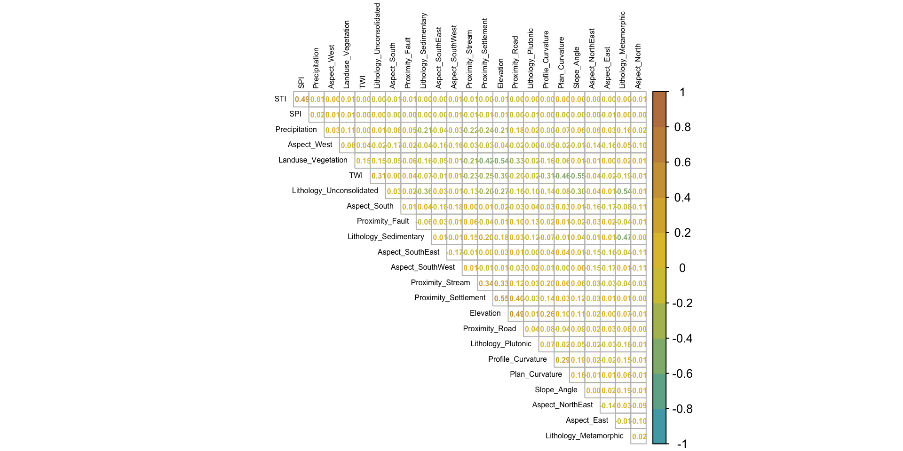
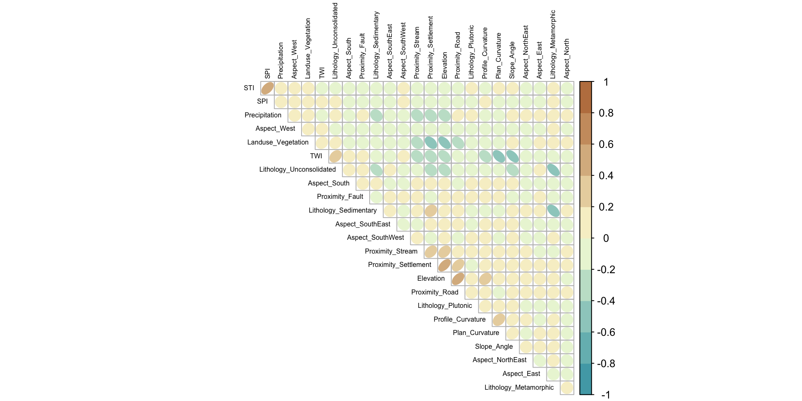
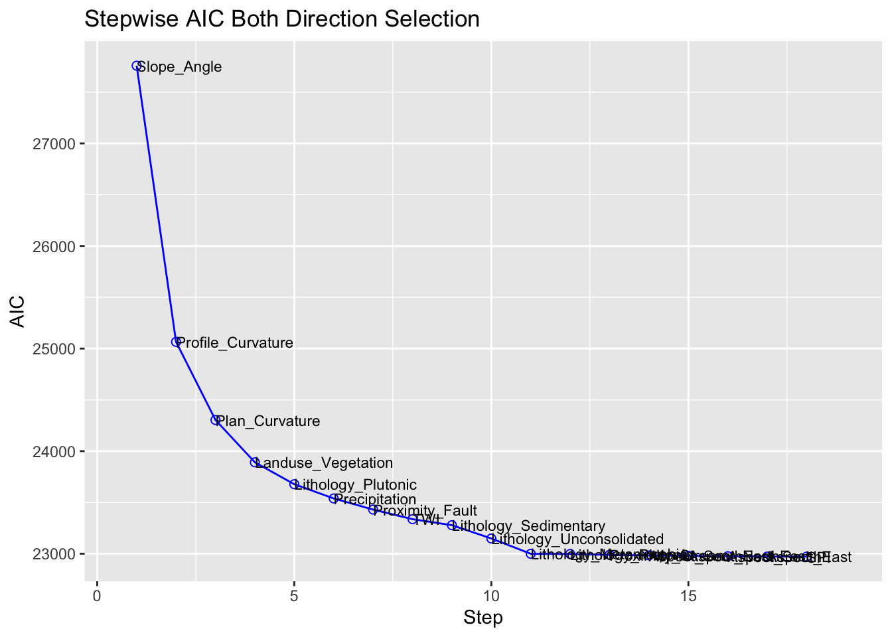
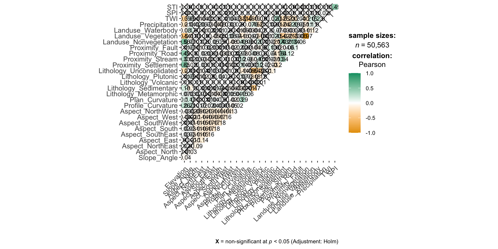

pacman::p_load(sp, sf, st, spdep, raster, spatstat, tmap, devtools,vtable,ggplot2,egg, corrplot, patchwork, ggstats, ggstatsplot, GWmodel, tidyverse, gtsummary,vtable, sjPlot, sjmisc, sjlabelled, tableHTML, olsrr, car, blorr,ISLR, klaR)Parametric Testing
R
sf
gwmodel
To develop a landslide susceptibility methodology framework, we will explore and calibrate different statistical and machine learning models.
1.0 Import Packages
2.0 Import Data
valtellina <- read_sf(dsn = "./data/vector", layer = "valtellina")
train_grids_v4 <- read.csv("~/IS485-Landslide/data/aspatial/train_grid_v4.csv")train_grid_v4.sf <- st_as_sf(train_grids_v4,
coords = c("X", "Y"))
train_grid_v4.sf <- st_set_crs(train_grid_v4.sf, 32632) 3.0 Exploratory Spatial Data Analysis (ESDA)
To calculate the summary statistics of landslide_train data frame, we use st().
st(train_grids_v4)| Variable | N | Mean | Std. Dev. | Min | Pctl. 25 | Pctl. 75 | Max |
|---|---|---|---|---|---|---|---|
| Train_ID | 50563 | 25282 | 14596 | 1 | 12642 | 37922 | 50563 |
| Grid_ID | 50563 | 7258576 | 4280699 | 154 | 3455206 | 11141722 | 14724829 |
| X | 50563 | 573312 | 27325 | 519097 | 550687 | 594547 | 624487 |
| Y | 50563 | 5129116 | 17040 | 5095541 | 5115266 | 5143076 | 5164991 |
| Landslide | 50563 | 0.83 | 0.38 | 0 | 1 | 1 | 1 |
| Elevation | 50563 | 1913 | 677 | 0 | 1509 | 2420 | 3924 |
| Slope_Angle | 50563 | 29 | 15 | 0 | 18 | 39 | 83 |
| Aspect_North | 50563 | 0.061 | 0.24 | 0 | 0 | 0 | 1 |
| Aspect_NorthEast | 50563 | 0.12 | 0.32 | 0 | 0 | 0 | 1 |
| Aspect_East | 50563 | 0.14 | 0.34 | 0 | 0 | 0 | 1 |
| Aspect_SouthEast | 50563 | 0.15 | 0.35 | 0 | 0 | 0 | 1 |
| Aspect_South | 50563 | 0.16 | 0.36 | 0 | 0 | 0 | 1 |
| Aspect_SouthWest | 50563 | 0.15 | 0.36 | 0 | 0 | 0 | 1 |
| Aspect_West | 50563 | 0.13 | 0.34 | 0 | 0 | 0 | 1 |
| Profile_Curvature | 50563 | -0.00043 | 0.0012 | -0.0066 | -0.0011 | 0.00022 | 0.0079 |
| Plan_Curvature | 50563 | -0.00019 | 0.0011 | -0.0056 | -0.00071 | 0.00032 | 0.0068 |
| Lithology_Metamorphic | 50563 | 0.42 | 0.49 | 0 | 0 | 1 | 1 |
| Lithology_Sedimentary | 50563 | 0.24 | 0.42 | 0 | 0 | 0 | 1 |
| Lithology_Plutonic | 50563 | 0.057 | 0.23 | 0 | 0 | 0 | 1 |
| Lithology_Unconsolidated | 50563 | 0.29 | 0.45 | 0 | 0 | 1 | 1 |
| Proximity_Settlement | 50563 | 904 | 764 | 0 | 328 | 1288 | 5600 |
| Proximity_Stream | 50563 | 12 | 12 | 0 | 3.1 | 17 | 97 |
| Proximity_Road | 50563 | 26 | 22 | 0 | 6.3 | 40 | 125 |
| Proximity_Fault | 50563 | 828 | 1032 | 0 | 199 | 1012 | 7746 |
| Landuse_Vegetation | 50563 | 0.51 | 0.5 | 0 | 0 | 1 | 1 |
| Precipitation | 50563 | 0.15 | 0.048 | 0 | 0.13 | 0.17 | 0.29 |
| TWI | 50563 | 7.5 | 2.3 | 3.7 | 6 | 8.3 | 23 |
| SPI | 50563 | 0.0065 | 0.029 | 0 | 0.00024 | 0.0032 | 1.4 |
| STI | 50563 | 7.7 | 27 | 0 | 0 | 5.8 | 877 |
Next, we will create atrellis plot by using ggarrange() of ggpubr package. In this way, we can see the distribution plots of different parameters at the same time.4.1 Correlation Matrix Using Corrplot
Before building a logistic regression model, it is important to ensure that the indepdent variables used are not highly correlated to each other. If these highly correlated independent variables are used in building a regression model by mistake, the quality of the model will be compromised. This phenomenon is known as multicollinearity in statistics.
Correlation matrix is commonly used to visualise the relationships between the independent variables. In this section, the corrplot package will be used to display the correlation matrix of the independent variables in condo_resale data frame.
corrplot(cor(train_grids_v4[, 6:29]), diag = FALSE, order = "AOE",
col=colorRampPalette(c("#50a8b4","#e4c838","#be804f"))(10),
tl.pos = "td", tl.cex = 0.5,tl.col = "black", number.cex = 0.5, method = "number", type = "upper")
corrplot(cor(train_grids_v4[,6:29]), diag = FALSE, order = "AOE",
col=colorRampPalette(c("#50a8b4","#ffffdd","#be804f"))(10),
tl.pos = "td", tl.cex = 0.5,tl.col = "black", number.cex = 0.5, method = "ellipse", type = "upper")
Matrix reorder is very important for mining the hiden structure and patter in the matrix. There are four methods in corrplot (parameter order), named “AOE”, “FPC”, “hclust”, “alphabet”. In the code chunk above, AOE order is used. It orders the variables by using the angular order of the eigenvectors method suggested by Michael Friendly.
4.2 Correlation Matrix Using ggstats
set.seed(123)
## producing the correlation matrix
ggcorrmat(
data = train_grids_v4[, 6:29],
matrix.type = "upper",
type = "parametric",
tr = 0.2,
partial = FALSE,
k = 2L,
sig.level = 0.05,
conf.level = 0.95,
bf.prior = 0.707,
ggcorrplot.args = list(
tl.cex = 10,
pch.cex = 5,
lab_size = 3
)) + ## modification outside `{ggstatsplot}` using `{ggplot2}` functions
ggplot2::theme(
axis.text.x = ggplot2::element_text(
margin = ggplot2::margin(t = 0.15, r = 0.15, b = 0.15, l = 0.15, unit = "cm")
)
)
Multiple Logistic Regression
We will fit a logistic regression model in order to predict the probability of a customer defaulting based on the average balance carried by the customer. The glm function fits generalized linear models, a class of models that includes logistic regression. The syntax of the glm function is similar to that of lm, except that we must pass the argument family = binomial in order to tell R to run a logistic regression rather than some other type of generalized linear model.
landslide.lr <- glm(Landslide ~ Elevation + Slope_Angle + Aspect_North + Aspect_NorthEast + Aspect_East+Aspect_SouthEast+Aspect_South + Aspect_SouthWest +Aspect_West + Profile_Curvature +Plan_Curvature + Lithology_Metamorphic+Lithology_Sedimentary + Lithology_Plutonic+Lithology_Unconsolidated + Proximity_Settlement+Proximity_Stream+Proximity_Road+Proximity_Fault+Landuse_Vegetation+Precipitation+TWI+SPI+STI, family = "binomial", data = train_grids_v4)summary(landslide.lr)
Call:
glm(formula = Landslide ~ Elevation + Slope_Angle + Aspect_North +
Aspect_NorthEast + Aspect_East + Aspect_SouthEast + Aspect_South +
Aspect_SouthWest + Aspect_West + Profile_Curvature + Plan_Curvature +
Lithology_Metamorphic + Lithology_Sedimentary + Lithology_Plutonic +
Lithology_Unconsolidated + Proximity_Settlement + Proximity_Stream +
Proximity_Road + Proximity_Fault + Landuse_Vegetation + Precipitation +
TWI + SPI + STI, family = "binomial", data = train_grids_v4)
Coefficients:
Estimate Std. Error z value Pr(>|z|)
(Intercept) -2.243e+00 1.893e-01 -11.847 < 2e-16 ***
Elevation 5.790e-05 3.517e-05 1.646 0.099718 .
Slope_Angle 1.706e-01 1.954e-03 87.343 < 2e-16 ***
Aspect_North -3.510e-02 8.618e-02 -0.407 0.683821
Aspect_NorthEast -2.225e-01 7.213e-02 -3.084 0.002041 **
Aspect_East -1.617e-01 7.128e-02 -2.268 0.023321 *
Aspect_SouthEast -2.401e-01 6.917e-02 -3.472 0.000517 ***
Aspect_South -1.812e-01 6.829e-02 -2.653 0.007975 **
Aspect_SouthWest -4.600e-02 6.949e-02 -0.662 0.508031
Aspect_West -4.762e-02 7.108e-02 -0.670 0.502869
Profile_Curvature -6.228e+02 1.777e+01 -35.052 < 2e-16 ***
Plan_Curvature -5.890e+02 2.009e+01 -29.320 < 2e-16 ***
Lithology_Metamorphic 1.109e+00 9.629e-02 11.522 < 2e-16 ***
Lithology_Sedimentary 1.577e+00 1.005e-01 15.687 < 2e-16 ***
Lithology_Plutonic -3.030e-02 8.847e-02 -0.343 0.731946
Lithology_Unconsolidated 1.499e+00 9.792e-02 15.312 < 2e-16 ***
Proximity_Settlement 4.360e-05 2.970e-05 1.468 0.142100
Proximity_Stream -6.250e-03 1.593e-03 -3.924 8.72e-05 ***
Proximity_Road -2.343e-03 1.026e-03 -2.283 0.022445 *
Proximity_Fault -1.315e-04 1.615e-05 -8.146 3.77e-16 ***
Landuse_Vegetation 6.692e-01 4.060e-02 16.483 < 2e-16 ***
Precipitation -3.469e+00 4.229e-01 -8.202 2.37e-16 ***
TWI -1.067e-01 9.637e-03 -11.067 < 2e-16 ***
SPI 1.191e+00 7.010e-01 1.699 0.089396 .
STI -5.287e-04 7.677e-04 -0.689 0.491022
---
Signif. codes: 0 '***' 0.001 '**' 0.01 '*' 0.05 '.' 0.1 ' ' 1
(Dispersion parameter for binomial family taken to be 1)
Null deviance: 46691 on 50562 degrees of freedom
Residual deviance: 22929 on 50538 degrees of freedom
AIC: 22979
Number of Fisher Scoring iterations: 7100*with(summary(landslide.lr), 1 - deviance/null.deviance)[1] 50.89114confint(landslide.lr)Waiting for profiling to be done... 2.5 % 97.5 %
(Intercept) -2.614798e+00 -1.872528e+00
Elevation -1.100535e-05 1.268617e-04
Slope_Angle 1.668213e-01 1.744792e-01
Aspect_North -2.036349e-01 1.342130e-01
Aspect_NorthEast -3.639457e-01 -8.116805e-02
Aspect_East -3.014909e-01 -2.205432e-02
Aspect_SouthEast -3.758587e-01 -1.047178e-01
Aspect_South -3.152073e-01 -4.749895e-02
Aspect_SouthWest -1.823284e-01 9.008984e-02
Aspect_West -1.870295e-01 9.162142e-02
Profile_Curvature -6.577535e+02 -5.880979e+02
Plan_Curvature -6.284441e+02 -5.496984e+02
Lithology_Metamorphic 9.214128e-01 1.298931e+00
Lithology_Sedimentary 1.380869e+00 1.775060e+00
Lithology_Plutonic -2.039839e-01 1.428812e-01
Lithology_Unconsolidated 1.308214e+00 1.692127e+00
Proximity_Settlement -1.450154e-05 1.019138e-04
Proximity_Stream -9.364838e-03 -3.120470e-03
Proximity_Road -4.349682e-03 -3.261896e-04
Proximity_Fault -1.631453e-04 -9.983405e-05
Landuse_Vegetation 5.897524e-01 7.489057e-01
Precipitation -4.298446e+00 -2.640479e+00
TWI -1.256194e-01 -8.783854e-02
SPI -1.375593e-01 2.613875e+00
STI -2.021054e-03 9.886275e-04tbl_regression(landslide.lr, intercept = TRUE) %>%
add_glance_source_note(
include = c(AIC))4.5 Calculating Adjusted Odd Ratios and Confidence Intervals
OR.CI <- cbind("AOR" = exp(coef(landslide.lr)),
exp(confint(landslide.lr)))[-1,]
round(OR.CI, 6)vif(landslide.lr) Elevation Slope_Angle Aspect_North
2.362748 1.691170 1.497475
Aspect_NorthEast Aspect_East Aspect_SouthEast
1.905428 1.954287 2.093957
Aspect_South Aspect_SouthWest Aspect_West
2.145022 2.027933 1.927346
Profile_Curvature Plan_Curvature Lithology_Metamorphic
1.422228 1.487571 7.443019
Lithology_Sedimentary Lithology_Plutonic Lithology_Unconsolidated
5.130757 1.910924 7.685545
Proximity_Settlement Proximity_Stream Proximity_Road
1.787204 1.293758 1.818813
Proximity_Fault Landuse_Vegetation Precipitation
1.058314 1.387744 1.297600
TWI SPI STI
2.201753 1.308706 1.308264 Stepwise Selection
For the initial/ first cut model, all the independent variables are put into the model. Our goal is to include a limited number of independent variables (5-15) which are all significant, without sacrificing too much on the model performance. The rationale behind not-including too many variables is that the model would be over fitted and would become unstable when tested on the validation sample. The variable reduction is done using forward or backward or stepwise variable selection procedures. We will use blr_step_aic_both() to shortlist predictors for our model.
blr_step_aic_both(landslide.lr)Stepwise Selection Method
-------------------------
Candidate Terms:
1 . Elevation
2 . Slope_Angle
3 . Aspect_North
4 . Aspect_NorthEast
5 . Aspect_East
6 . Aspect_SouthEast
7 . Aspect_South
8 . Aspect_SouthWest
9 . Aspect_West
10 . Profile_Curvature
11 . Plan_Curvature
12 . Lithology_Metamorphic
13 . Lithology_Sedimentary
14 . Lithology_Plutonic
15 . Lithology_Unconsolidated
16 . Proximity_Settlement
17 . Proximity_Stream
18 . Proximity_Road
19 . Proximity_Fault
20 . Landuse_Vegetation
21 . Precipitation
22 . TWI
23 . SPI
24 . STI
Variables Entered/Removed:
- Slope_Angle added
- Profile_Curvature added
- Plan_Curvature added
- Landuse_Vegetation added
- Lithology_Plutonic added
- Precipitation added
- Proximity_Fault added
- TWI added
- Lithology_Sedimentary added
- Lithology_Unconsolidated added
- Lithology_Metamorphic added
- Lithology_Plutonic removed
- Proximity_Stream added
- Aspect_SouthEast added
- Aspect_NorthEast added
- Aspect_South added
- Aspect_East added
- SPI added
No more variables to be added or removed.
Stepwise Summary
---------------------------------------------------------------------------
Variable Method AIC BIC Deviance
---------------------------------------------------------------------------
Slope_Angle addition 27757.416 27775.078 27753.416
Profile_Curvature addition 25065.141 25091.634 25059.141
Plan_Curvature addition 24303.970 24339.294 24295.970
Landuse_Vegetation addition 23891.260 23935.415 23881.260
Lithology_Plutonic addition 23677.727 23730.713 23665.727
Precipitation addition 23539.203 23601.020 23525.203
Proximity_Fault addition 23430.433 23501.081 23414.433
TWI addition 23337.014 23416.493 23319.014
Lithology_Sedimentary addition 23278.363 23366.672 23258.363
Lithology_Unconsolidated addition 23148.835 23245.976 23126.835
Lithology_Metamorphic addition 22999.689 23105.661 22975.689
Lithology_Plutonic removal 22997.760 23094.901 22975.760
Proximity_Stream addition 22989.371 23095.343 22965.371
Aspect_SouthEast addition 22984.054 23098.857 22958.054
Aspect_NorthEast addition 22979.924 23103.558 22951.924
Aspect_South addition 22975.790 23108.254 22945.790
Aspect_East addition 22972.549 23113.844 22940.549
SPI addition 22971.964 23122.090 22937.964
---------------------------------------------------------------------------landslide.lr %>%
blr_step_aic_both() %>%
plot()Stepwise Selection Method
-------------------------
Candidate Terms:
1 . Elevation
2 . Slope_Angle
3 . Aspect_North
4 . Aspect_NorthEast
5 . Aspect_East
6 . Aspect_SouthEast
7 . Aspect_South
8 . Aspect_SouthWest
9 . Aspect_West
10 . Profile_Curvature
11 . Plan_Curvature
12 . Lithology_Metamorphic
13 . Lithology_Sedimentary
14 . Lithology_Plutonic
15 . Lithology_Unconsolidated
16 . Proximity_Settlement
17 . Proximity_Stream
18 . Proximity_Road
19 . Proximity_Fault
20 . Landuse_Vegetation
21 . Precipitation
22 . TWI
23 . SPI
24 . STI
Variables Entered/Removed:
- Slope_Angle added
- Profile_Curvature added
- Plan_Curvature added
- Landuse_Vegetation added
- Lithology_Plutonic added
- Precipitation added
- Proximity_Fault added
- TWI added
- Lithology_Sedimentary added
- Lithology_Unconsolidated added
- Lithology_Metamorphic added
- Lithology_Plutonic removed
- Proximity_Stream added
- Aspect_SouthEast added
- Aspect_NorthEast added
- Aspect_South added
- Aspect_East added
- SPI added
No more variables to be added or removed.
Model Update
landslide.lr_modified <- glm(Landslide ~ Slope_Angle + Aspect_SouthWest + Aspect_South + Profile_Curvature +Plan_Curvature +Lithology_Unconsolidated+Proximity_Stream+Landuse_Vegetation+TWI, family = "binomial", data = train_grids_v4)summary(landslide.lr_modified)
Call:
glm(formula = Landslide ~ Slope_Angle + Aspect_SouthWest + Aspect_South +
Profile_Curvature + Plan_Curvature + Lithology_Unconsolidated +
Proximity_Stream + Landuse_Vegetation + TWI, family = "binomial",
data = train_grids_v4)
Coefficients:
Estimate Std. Error z value Pr(>|z|)
(Intercept) -1.821e+00 9.862e-02 -18.461 <2e-16 ***
Slope_Angle 1.684e-01 1.917e-03 87.831 <2e-16 ***
Aspect_SouthWest 5.325e-02 4.872e-02 1.093 0.2744
Aspect_South -9.199e-02 4.625e-02 -1.989 0.0467 *
Profile_Curvature -6.493e+02 1.727e+01 -37.585 <2e-16 ***
Plan_Curvature -5.711e+02 1.933e+01 -29.547 <2e-16 ***
Lithology_Unconsolidated 3.175e-01 3.831e-02 8.288 <2e-16 ***
Proximity_Stream -1.241e-03 1.432e-03 -0.867 0.3860
Landuse_Vegetation 6.966e-01 3.549e-02 19.629 <2e-16 ***
TWI -1.020e-01 9.132e-03 -11.170 <2e-16 ***
---
Signif. codes: 0 '***' 0.001 '**' 0.01 '*' 0.05 '.' 0.1 ' ' 1
(Dispersion parameter for binomial family taken to be 1)
Null deviance: 46691 on 50562 degrees of freedom
Residual deviance: 23700 on 50553 degrees of freedom
AIC: 23720
Number of Fisher Scoring iterations: 6vif(landslide.lr_modified) Slope_Angle Aspect_SouthWest Aspect_South
1.654654 1.037041 1.038986
Profile_Curvature Plan_Curvature Lithology_Unconsolidated
1.383936 1.406606 1.207148
Proximity_Stream Landuse_Vegetation TWI
1.118953 1.093817 2.047931 Model Fit Statistics
Model fit statistics are available to assess how well the model fits the data and to compare two different models.The output includes likelihood ratio test, AIC, BIC and a host of pseudo r-squared measures. You can read more about pseudo r-squared at https://stats.idre.ucla.edu/other/mult-pkg/faq/general/faq-what-are-pseudo-r-squareds/.
blr_model_fit_stats(landslide.lr) Model Fit Statistics
-----------------------------------------------------------------------------------
Log-Lik Intercept Only: -23345.502 Log-Lik Full Model: -11464.710
Deviance(50538): 22929.420 LR(24): 23761.584
Prob > LR: 0.000
MCFadden's R2 0.509 McFadden's Adj R2: 0.508
ML (Cox-Snell) R2: 0.375 Cragg-Uhler(Nagelkerke) R2: 0.622
McKelvey & Zavoina's R2: 0.684 Efron's R2: 0.619
Count R2: 0.930 Adj Count R2: 0.598
BIC: 23200.195 AIC: 22979.420
-----------------------------------------------------------------------------------Compared with the basic model,
blr_model_fit_stats(landslide.lr) Model Fit Statistics
-----------------------------------------------------------------------------------
Log-Lik Intercept Only: -23345.502 Log-Lik Full Model: -11464.710
Deviance(50538): 22929.420 LR(24): 23761.584
Prob > LR: 0.000
MCFadden's R2 0.509 McFadden's Adj R2: 0.508
ML (Cox-Snell) R2: 0.375 Cragg-Uhler(Nagelkerke) R2: 0.622
McKelvey & Zavoina's R2: 0.684 Efron's R2: 0.619
Count R2: 0.930 Adj Count R2: 0.598
BIC: 23200.195 AIC: 22979.420
-----------------------------------------------------------------------------------Model Validation
blr_confusion_matrix(landslide.lr, cutoff = 0.5)Confusion Matrix and Statistics
Reference
Prediction 0 1
0 6548 1292
1 2235 40488
Accuracy : 0.9302
No Information Rate : 0.1737
Kappa : 0.7462
McNemars's Test P-Value : 0.0000
Sensitivity : 0.9691
Specificity : 0.7455
Pos Pred Value : 0.9477
Neg Pred Value : 0.8352
Prevalence : 0.8263
Detection Rate : 0.8007
Detection Prevalence : 0.8449
Balanced Accuracy : 0.8573
Precision : 0.9477
Recall : 0.9691
'Positive' Class : 1Hosmer Lemeshow Test
Hosmer and Lemeshow developed a goodness-of-fit test for logistic regression models with binary responses. The test involves dividing the data into approximately ten groups of roughly equal size based on the percentiles of the estimated probabilities. The observations are sorted in increasing order of their estimated probability of having an even outcome. The discrepancies between the observed and expected number of observations in these groups are summarized by the Pearson chi-square statistic, which is then compared to chi-square distribution with t degrees of freedom, where t is the number of groups minus 2. Lower values of Goodness-of-fit are preferred.
blr_test_hosmer_lemeshow(landslide.lr_modified) Partition for the Hosmer & Lemeshow Test
--------------------------------------------------------------
def = 1 def = 0
Group Total Observed Expected Observed Expected
--------------------------------------------------------------
1 5057 452 813.72 4605 4243.28
2 5056 2228 2494.63 2828 2561.37
3 5056 4275 4035.12 781 1020.88
4 5056 4922 4609.93 134 446.07
5 5057 5024 4824.79 33 232.21
6 5056 5045 4921.91 11 134.09
7 5056 5051 4977.98 5 78.02
8 5056 5044 5013.19 12 42.81
9 5056 5033 5036.35 23 19.65
10 5057 4706 5052.38 351 4.62
--------------------------------------------------------------
Goodness of Fit Test
------------------------------
Chi-Square DF Pr > ChiSq
------------------------------
26946.6369 8 0.0000
------------------------------ROC Curve
ROC curve is a graphical representation of the validity of cut-offs for a logistic regression model. The ROC curve is plotted using the sensitivity and specificity for all possible cut-offs, i.e., all the probability scores. The graph is plotted using sensitivity on the y-axis and 1-specificity on the x-axis. Any point on the ROC curve represents a sensitivity X (1-specificity) measure corresponding to a cut-off. The area under the ROC curve is used as a validation measure for the model – the bigger the area the better is the model.
landslide.lr_modified%>%
blr_gains_table() %>%
blr_roc_curve()
Influence Diagnostics
blr_plot_diag_influence(landslide.lr_modified)
Fitted Values Diagnostics
blr_plot_diag_fit(landslide.lr_modified)
Weight of Evidence
library("Information")
IV <- create_infotables(data=train_grids_v4[, 5:29],
valid=train_grids_v4[, 5:29],
y="Landslide")
kable(IV$Summary, row.names=FALSE)| Variable | IV | PENALTY | AdjIV |
|---|---|---|---|
| Slope_Angle | 5.3574828 | 0 | 5.3574828 |
| TWI | 0.5119619 | 0 | 0.5119619 |
| Elevation | 0.3270770 | 0 | 0.3270770 |
| Proximity_Settlement | 0.2073722 | 0 | 0.2073722 |
| Proximity_Road | 0.2060752 | 0 | 0.2060752 |
| Profile_Curvature | 0.1481448 | 0 | 0.1481448 |
| Plan_Curvature | 0.1469663 | 0 | 0.1469663 |
| Precipitation | 0.1097135 | 0 | 0.1097135 |
| Lithology_Unconsolidated | 0.1047331 | 0 | 0.1047331 |
| Proximity_Fault | 0.0931591 | 0 | 0.0931591 |
| Lithology_Sedimentary | 0.0770191 | 0 | 0.0770191 |
| Landuse_Vegetation | 0.0758787 | 0 | 0.0758787 |
| Proximity_Stream | 0.0606072 | 0 | 0.0606072 |
| Lithology_Metamorphic | 0.0243440 | 0 | 0.0243440 |
| Lithology_Plutonic | 0.0184281 | 0 | 0.0184281 |
| Aspect_East | 0.0028829 | 0 | 0.0028829 |
| Aspect_SouthEast | 0.0025985 | 0 | 0.0025985 |
| Aspect_South | 0.0020174 | 0 | 0.0020174 |
| Aspect_North | 0.0019081 | 0 | 0.0019081 |
| Aspect_West | 0.0011630 | 0 | 0.0011630 |
| STI | 0.0008136 | 0 | 0.0008136 |
| SPI | 0.0007769 | 0 | 0.0007769 |
| Aspect_SouthWest | 0.0000422 | 0 | 0.0000422 |
| Aspect_NorthEast | 0.0000023 | 0 | 0.0000023 |
Spatial Interpolation
valtellina_boundary <- st_union(valtellina) %>% st_sf()library(sf)
library(terra)
grid <- terra::rast(valtellina_boundary, nrows = 10000, ncols = 15000)
xy <- terra::xyFromCell(grid, 1:ncell(grid))
coop <- st_as_sf(as.data.frame(xy), coords = c("x", "y"),
crs = st_crs(valtellina_boundary))
coop <- st_filter(coop, valtellina_boundary)
qtm(coop)# Voronoi
v <- terra::voronoi(x = terra::vect(train.res.sf), bnd = valtellina_boundary)
plot(v)
points(vect(train.res.sf), cex = 0.5)
# Prediction
v <- st_as_sf(v)
tm_shape(v) +
tm_fill(col = "MLR_RES", palette = "viridis")+
tm_layout(
legend.outside=TRUE
)resp <- st_intersection(v, coop)
resp$pred <- resp$MLR_RES
pred_mean <- terra::rasterize(resp, grid, field = "pred", fun = "mean")
tm_shape(pred_mean) +
tm_raster(palette = "plasma")+
tm_layout(
legend.outside=TRUE
)IDW: Inverse Distance Weighting
In the IDW method, values at unsampled locations are estimated as the weighted average of values from the rest of locations with weights inversely proportional to the distance between the unsampled and the sampled locations.
We can apply the IDW method with the gstat() function of gstat and the following arguments:
formula:vble ~ 1to have an intercept only model,nmax: number of neighbors is set equal to the total number of locations,idp: inverse distance power is set toidp = 1to have weights with β=1�=1.
Then, we use the predict() function to obtain the predictions and tmap to show the results
library(gstat)
res <- gstat(formula = MLR_RES ~ 1, locations = train.res.sf,
nmax = nrow(train.res.sf), # use all the neighbors locations
set = list(idp = 1)) # beta = 1
resp <- predict(res, coop)
resp$x <- st_coordinates(resp)[,1]
resp$y <- st_coordinates(resp)[,2]
resp$pred <- resp$var1.pred
pred <- terra::rasterize(resp, grid, field = "pred", fun = "mean")tm_shape(pred) +
tm_raster(palette = "viridis")+
tm_layout(
legend.outside=TRUE
)